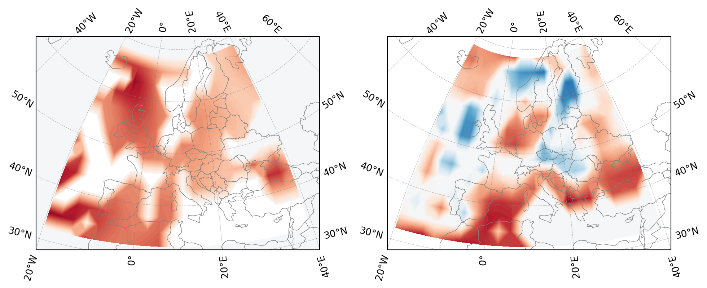
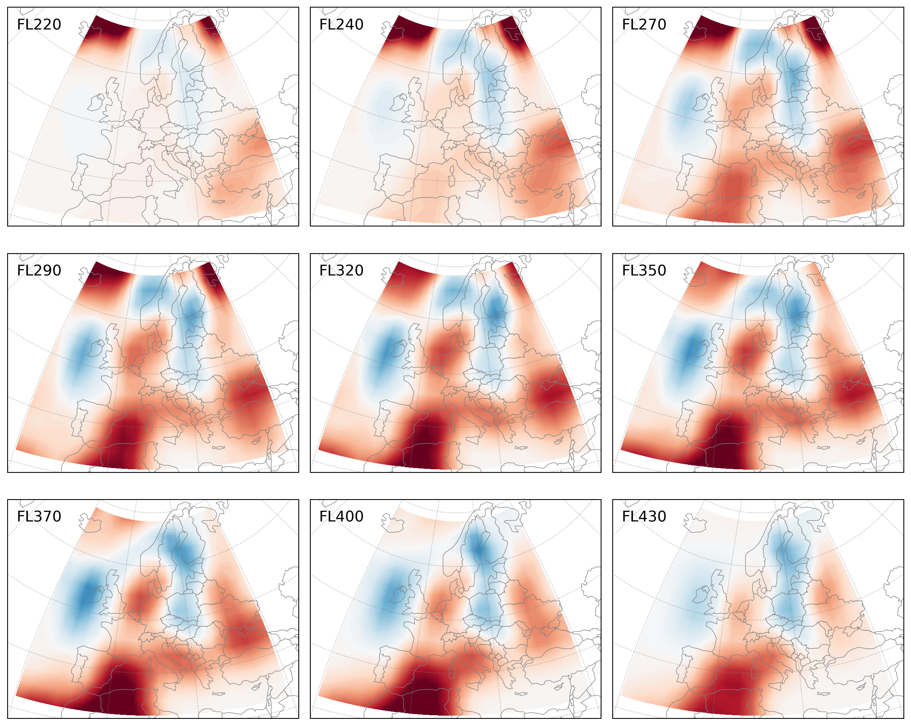
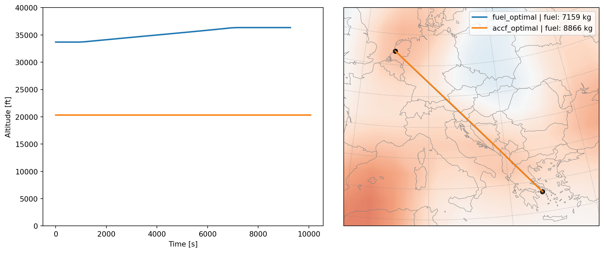
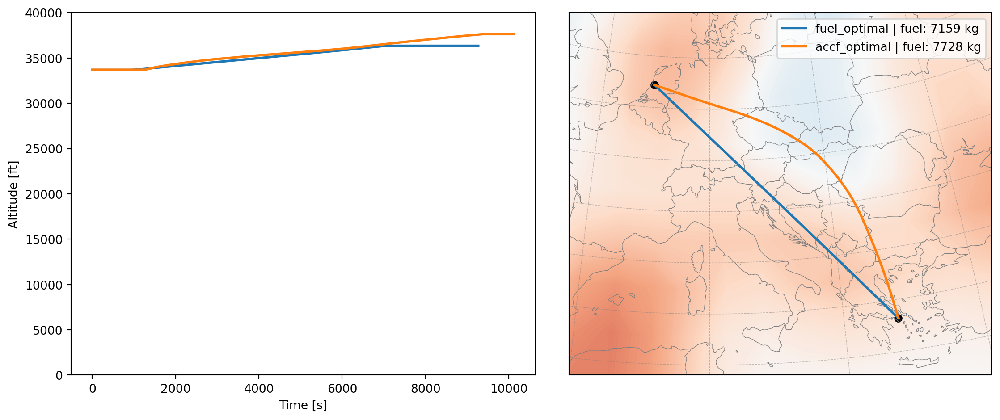
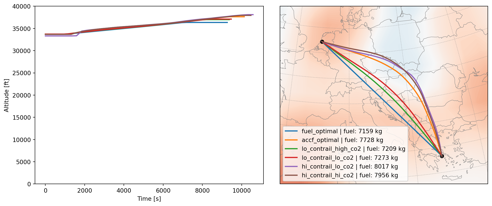

import xarray as xr
ds = xr.open_dataset("tmp/contrail.nc").sel(time="2015-12-18")11 🥠 Contrails
Contrails are line-shaped clouds produced by aircraft. They are formed when the water vapor in the exhaust of an airplane engine condenses and freezes. Depending on the atmospheric conditions, contrails are made up of ice crystals and can last for a few seconds to several hours.
Similar to cirrus clouds, contrails can trap heat in the atmosphere, which has a warming effect. They can also reflect sunlight back into space, which can have a cooling effect. The net effect of contrails on the climate is still a topic of ongoing research. But many companies and policymakers have already been pushing the adoption of contrail optimization.
I have more skepticism about its operational maturity, as a lot of the uncertainties are yet to be addressed. But it is a good example to show how the TOP library can be used to perform this kind of optimization. In this chapter, we will explain how we can combine the knowledge of the previously explained wind cost grid to optimize a trajectory to study the trade-off between contrail and fuel.
11.1 Building the cost grid
In the previous chapter, we have built a cost grid that represents the cost of flying in a certain region. Here we want to construct a cost grid that represents the climate cost of contrails and CO2 emissions, which are converted to temperature response based on their effective radiative forcing (ERF) in W/m2.
The source of the example data is obtained from the paper Yin et al. (2023). The data is based on the ECMWF data and is used to calculate the contrail temperature response (ATR20) in K/km. The data is available in the netCDF format and is stored in the 3D grid of latitude, longitude, and pressure level.
First, we will download the associated data with the paper using the following code:
import urllib
urllib.request.urlretrieve('https://opendap.4tu.nl/thredds/fileServer/data2/djht/bea8a3fe-e34c-4598-9f94-c5a5c63348e5/1/contrail_original.nc', 'tmp/contrail.nc')Next, we will read the data and convert it to a cost grid. We will use only the data from December 18, 2015 as example, which is also the date used in the paper.
In this dataset, the levels are defined using L31 model from ECMWF. In order to convert the pressure levels to height, we use the following corresponding pressure altitude in hPa, which will be used to calculate the height in m:
L31 level to pressure in hPa
level_pressure = [
0.0000,
10.0000,
30.0000,
50.0000,
70.0000,
90.0787,
110.6606,
132.3968,
155.7909,
181.1544,
208.6494,
238.3258,
270.1530,
304.0465,
339.8891,
377.5467,
416.8789,
457.7442,
500.0000,
543.4970,
588.0685,
633.5144,
679.5799,
725.9285,
772.1102,
817.5241,
861.3757,
902.6287,
939.9520,
971.6610,
995.6532,
1009.3396,
]The following code will convert the contrail temperature response to a cost grid.
Note
A few things to pay attention to: - longitude from ECMWF data is in the range of 0 to 360, we need to convert it to -180 to 180. - The height is in hPa, we need to convert it to m. - We will only use the data below 15,000m (below FL500). - The cost dataframe must contain the following minimum columns: ‘latitude’, ‘longitude’, ‘height’, ‘cost’.
import openap
import pandas as pd
import numpy as np
df = (
ds.to_dataframe()
.reset_index()
.assign(lev=lambda x: x.lev.astype(int))
.merge(
pd.DataFrame(level_pressure, columns=["hPa"]).reset_index(names="lev"),
on="lev",
)
.assign(height=lambda x: openap.aero.h_isa(x.hPa * 100).round(-2))
.assign(longitude=lambda x: ((x.lon + 180) % 360 - 180))
.query("height<15000")
)
df_cost_world = df.rename(
columns={
"lat": "latitude",
"atr20_contrail": "cost",
}
)[["time", "latitude", "longitude", "hPa", "height", "cost"]]
df_cost_world.head()| time | latitude | longitude | hPa | height | cost | |
|---|---|---|---|---|---|---|
| 6 | 2015-12-18 | 87.8638 | 0.0 | 132.3968 | 14400.0 | 0.000000e+00 |
| 7 | 2015-12-18 | 87.8638 | 0.0 | 155.7909 | 13400.0 | 0.000000e+00 |
| 8 | 2015-12-18 | 87.8638 | 0.0 | 181.1544 | 12400.0 | 9.405122e-13 |
| 9 | 2015-12-18 | 87.8638 | 0.0 | 208.6494 | 11500.0 | 8.791347e-13 |
| 10 | 2015-12-18 | 87.8638 | 0.0 | 238.3258 | 10700.0 | 7.871002e-13 |
Before we use the data for optimization, let’s reproduce the example from the paper with the cost grid for Europe at 250 hPa, which is approximately 10,700m. The selected EU region is defined as 30-70 latitude and -20 to 40 longitude.
import matplotlib.pyplot as plt
from cartopy import crs as ccrs
from cartopy.feature import BORDERS
proj = ccrs.TransverseMercator(central_longitude=10, central_latitude=50)
fig, axes = plt.subplots(1, 2, figsize=(12, 4), subplot_kw=dict(projection=proj))
df_cost_eu_250hpa = (
df_cost_world.query("height==10700")
.query("-20<longitude<40 and 30<latitude<70")
.sort_values(["latitude", "longitude"])
)
hours = [0, 12]
for ax, hour in zip(axes, hours):
df_cost_pivot = df_cost_eu_250hpa.query(f"time.dt.hour=={hour}").pivot(
index="latitude", columns="longitude", values="cost"
)
lat, lon, val = (
df_cost_pivot.index.values,
df_cost_pivot.columns.values,
df_cost_pivot.values,
)
ax.set_extent([-20, 40, 28, 70])
ax.add_feature(BORDERS, lw=0.5, edgecolor="gray")
ax.coastlines(resolution="110m", lw=0.5, color="gray")
ax.gridlines(draw_labels=True, lw=0.5, color="gray", alpha=0.5, linestyle="--")
ax.contourf(
lon,
lat,
val,
cmap="RdBu_r",
levels=100,
transform=ccrs.PlateCarree(),
vmin=-df_cost_eu_250hpa.cost.max(),
vmax=df_cost_eu_250hpa.cost.max(),
)
11.2 The contrail grid
Since the grid is sparse in the time dimension, with data at 00:00, 06:00, 12:00, and 18:00, we will only use the data at 12:00 for the optimization, which simplifies the cost grid to 3D. We will also smooth the grid using a Gaussian filter.
Note
It is also practical to smooth the grid, most importantly the vertical axis, so that the optimization can be more stable. The Gaussian filter helps to prevent sharp discontinuities in the cost grid, thus improving the gradient calculation.
from scipy.ndimage import gaussian_filter
df_cost = df_cost_world.query(
"-20<longitude<40 and 30<latitude<70 and time.dt.hour==12"
).sort_values(["height", "latitude", "longitude"])
cost = df_cost.cost.values.reshape(
df_cost.height.nunique(),
df_cost.latitude.nunique(),
df_cost.longitude.nunique(),
)
cost_ = gaussian_filter(cost, sigma=1, mode="nearest")
df_cost = df_cost.assign(cost=cost_.flatten())Next, we can plot the smoothed cost grid for different heights.
fig, axes = plt.subplots(3, 3, figsize=(12, 10), subplot_kw=dict(projection=proj))
heights = df_cost.height.unique()
skip_levels = 15
for i, ax in enumerate(axes.flatten()):
df_cost_pivot = df_cost.query(f"height=={heights[skip_levels+i]}").pivot(
index="latitude", columns="longitude", values="cost"
)
lat, lon, val = (
df_cost_pivot.index.values,
df_cost_pivot.columns.values,
df_cost_pivot.values,
)
ax.set_extent([-20, 40, 28, 70])
ax.add_feature(BORDERS, lw=0.5, edgecolor="gray")
ax.coastlines(resolution="110m", lw=0.5, color="gray")
ax.gridlines(
draw_labels=False, linewidth=0.5, color="gray", alpha=0.5, linestyle="--"
)
ax.contourf(
lon,
lat,
val,
cmap="RdBu_r",
levels=100,
transform=ccrs.PlateCarree(),
vmin=-df_cost.cost.quantile(0.99),
vmax=df_cost.cost.quantile(0.99),
)
fl = heights[skip_levels + i] / openap.aero.ft // 1000 * 10
ax.text(0.03, 0.9, f"FL{int(fl)}", transform=ax.transAxes, fontsize=14)
plt.tight_layout()
11.3 Optimization for both contrail and CO2
Now we can use the cost grid to optimize a trajectory. Again, we use the example flight from Amsterdam (EHAM) to Athens (LGAV).
The final cost function is the combination of temperature response (ATR20) from both contrails and CO2 emissions.
The unit of the contrail temperature response from the paper is in K/km; however, the optimizer requires the cost to be divided by time, thus we need to convert the unit to K/s. In this case, we first define the cost to be not time-dependent. Then, we multiply the cost by the true airspeed of the aircraft with a conversion factor of 1e-3, which is the speed of the aircraft in km/s.
For the CO2 emissions, we use the conversion factor of 7.03e-15 K/kg to convert the fuel flow (kg/s) to temperature response (K/s).
In addition to the default combined effect of contrail and CO2, we will build a fuel optimal trajectory as a comparison. The fuel optimal trajectory is obtained by setting the contrail cost to zero.
from openap import top
optimizer = top.Cruise("A320", "EHAM", "LGAV", m0=0.85)
optimizer.setup(debug=False, max_iteration=2000)
flight_fuel_optimal = optimizer.trajectory(objective="fuel")
interpolant = top.tools.interpolant_from_dataframe(df_cost)
def objective(x, u, dt, **kwargs):
scale_contrail = kwargs.get("scale_contrail", 1)
scale_co2 = kwargs.get("scale_co2", 1)
xp, yp, h, m, ts = x[0], x[1], x[2], x[3], x[4]
mach, vs, psi = u[0], u[1], u[2]
vtas = openap.casadi.aero.mach2tas(mach, h)
contrail_cost = (
optimizer.obj_grid_cost(x, u, dt, n_dim=3, time_dependent=False, **kwargs)
* vtas
* 1e-3
) * scale_contrail
co2_cost = optimizer.obj_fuel(x, u, dt, **kwargs) * 7.03e-15 * scale_co2
return contrail_cost + co2_cost
flight = optimizer.trajectory(
objective=objective,
interpolant=interpolant,
initial_guess=flight_fuel_optimal,
return_failed=True,
)
results = {}
results["fuel_optimal"] = flight_fuel_optimal
results["accf_optimal"] = flightNext we can visualize the final flight trajectory. Note that the cost grid at FL350 is shown in the background.
Show the code of plot_flight() used for visulization
def plot_flight(results, df_cost, scenarios=None):
proj = ccrs.TransverseMercator(central_longitude=10, central_latitude=50)
fig = plt.figure(figsize=(12, 5))
ax = fig.add_subplot(1, 2, 1)
for scenario, flight in results.items():
ax.plot(flight.ts, flight.altitude, lw=2)
ax.set_ylim(0, 40000)
ax.set_xlabel("Time [s]")
ax.set_ylabel("Altitude [ft]")
ax = plt.subplot(1, 2, 2, projection=proj)
df_cost_pivot = df_cost.query("height==10700").pivot(
index="latitude", columns="longitude", values="cost"
)
lat, lon, val = (
df_cost_pivot.index.values,
df_cost_pivot.columns.values,
df_cost_pivot.values,
)
ax.set_extent([0, 30, 35, 55])
ax.add_feature(BORDERS, lw=0.5, edgecolor="gray")
ax.coastlines(resolution="50m", lw=0.5, color="gray")
ax.gridlines(
draw_labels=False, linewidth=0.5, color="gray", alpha=0.5, linestyle="--"
)
ax.contourf(
lon,
lat,
val,
cmap="RdBu_r",
levels=100,
transform=ccrs.PlateCarree(),
vmin=-df_cost.cost.max(),
vmax=df_cost.cost.max(),
)
for scenario, flight in results.items():
ax.plot(
flight.longitude,
flight.latitude,
transform=ccrs.PlateCarree(),
lw=2,
label=f"{scenario} | fuel: {int(flight.fuel.sum())} kg",
)
for r, p in flight.iloc[[0, -1]].iterrows():
ax.scatter(
p.longitude,
p.latitude,
c="k",
transform=ccrs.PlateCarree(),
)
ax.legend()
plt.tight_layout()
plt.show()cacluate extra fuel
accf_fuel = results["accf_optimal"].fuel.sum()
fuel_fuel = results["fuel_optimal"].fuel.sum()
extra_fuel = int((accf_fuel - fuel_fuel).round(-1))
extra_fuel_percent = int(((accf_fuel / fuel_fuel - 1) * 100).round())plot_flight(results, df_cost)
In this example, we can see that the optimal trajectory considering both contrail and CO2 climate effects fly at a very low altitude to avoide regions with high contrail cost. This comes with a great cost in terms of fuel, which is significantly higher than the fuel optimal trajectory. The extra fuel cost is about 1710 kg, which accounts for about 24% extra fuel when compared to the optimal case.
To perform a more fair comparison, we will constraint the altitude of the desired trajectory to be within the range of the fuel optimal trajectory. This can be done by setting the h_min and h_max arguments in the optimizer.trajectory() function. A margion of 600 meters is added to the minimum and maximum altitude of the fuel optimal trajectory.
flight = optimizer.trajectory(
objective=objective,
interpolant=interpolant,
initial_guess=flight_fuel_optimal,
h_min=flight_fuel_optimal.h.min() - 600,
h_max=flight_fuel_optimal.h.max() + 600,
return_failed=True,
)
results = {}
results["fuel_optimal"] = flight_fuel_optimal
results["accf_optimal"] = flightcacluate extra fuel
accf_fuel = results["accf_optimal"].fuel.sum()
fuel_fuel = results["fuel_optimal"].fuel.sum()
extra_fuel = int((accf_fuel - fuel_fuel).round(-1))
extra_fuel_percent = int(((accf_fuel / fuel_fuel - 1) * 100).round())plot_flight(results, df_cost)
Even in this constrained trajectory, we can see that the sub-optimal trajectory considering both contrail and CO2 climate effects differs largely from the fuel optimal trajectory. A large lateral deviation is observed in both the altitude and the route to avoid regions with high contrail cost.
This deviation costs about 570 kg of fuel, which accounts for about 8% extra fuel when compared to the optimal case. This is a still a significant amount of fuel, results in greater monetary cost and excess CO2 emissions.
11.4 Uncertainties that makes or breaks the optimization
In recent studies regarding operational contrail mitigation, we often miss the fact that the contrail cost is highly uncertain. In the paper The contribution of global aviation to anthropogenic climate forcing for 2000 to 2018 Lee et al. (2021), the authors have pointed out that the uncertainties in the effective radiative forcing caused by contrail cirrus can be between 17 and 98 mW/m2. This is a huge range, but many studies only consider the mean value of 57.4.
This large scale of uncertainties can lead to completely different optimal trajectories. In the following example, we will show how the optimization results can be affected by the uncertainties in the contrail cost.
First of all, different scenarios and scaling factors for contrail and CO2 are defined as follows:
more_scenarios = {
"fuel_optimal": [0, 1],
"accf_optimal": [1, 1],
"lo_contrail_high_co2": [0.293, 1.166],
"lo_contrail_lo_co2": [0.293, 0.816],
"hi_contrail_lo_co2": [1.707, 0.816],
"hi_contrail_hi_co2": [1.707, 1.166],
}In the above scenarios, for example, lo_contrail_high_co2 refers to scaling the contrail impact to a lower bound of 29.3% of the default value, while the CO2 cost is scaled to the upper bound of 116.6% of the default value. In this case, the contrail has a significantly lower impact than what has been assumed in the default case, while the CO2 cost is slightly higher.
The following code will run the optimization for all the scenarios and visualize the results. Note that the altitude constraints are still applied to the optimizations.
from openap import top
optimizer = top.Cruise("A320", "EHAM", "LGAV", m0=0.85)
optimizer.setup(debug=False, max_iteration=2000)
interpolant = top.tools.interpolant_from_dataframe(df_cost)
more_results = {}
for scenario, weights in more_scenarios.items():
print(f"runing scenario: {scenario}")
flight = optimizer.trajectory(
objective=objective,
interpolant=interpolant,
initial_guess=flight_fuel_optimal,
h_min=flight_fuel_optimal.h.min() - 600,
h_max=flight_fuel_optimal.h.max() + 600,
scale_contrail=weights[0],
scale_co2=weights[1],
return_failed=True,
)
more_results[scenario] = flightruning scenario: fuel_optimal
runing scenario: accf_optimal
runing scenario: lo_contrail_high_co2
runing scenario: lo_contrail_lo_co2
runing scenario: hi_contrail_lo_co2
runing scenario: hi_contrail_hi_co2plot_flight(more_results, df_cost)
What we can see based on these results is that the optimal trajectory can be very different depending on the uncertainties in the contrail cost. In the case of lo_contrail_high_co2, the optimal trajectory is much closer to the fuel optimal trajectory, as the contrail cost is significantly lower than the default value. In the case of hi_contrail_lo_co2, it has the highest deviation from the fuel optimal trajectory.
Given the large uncertainties in the contrail cost, without a better understanding of the uncertainties, pushing operations to perform deviations caused by contrails may come with a large cost in terms of fuel and CO2 emissions.